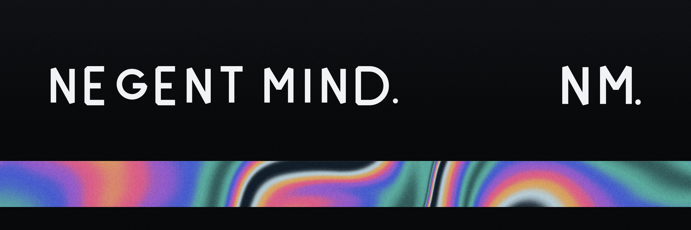
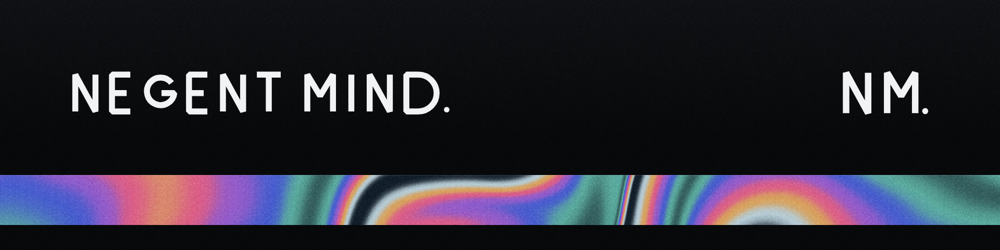
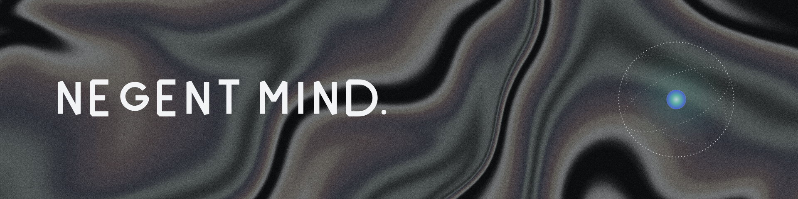

Cada celda muestra el master 2400×800; la mini inferior es la versión 1920×480 para perfil de GitHub.
v1 — StrataPrincipalbanner-v1.png / banner-gh-v1.png · mod → banner-final/


Crop full-bleed del warp + velo carbón 60% + wordmark plata a la izquierda.
Seleccionada con cambios: wordmark centrado grande, fade a
transparencia en los 4 bordes, esquinas redondeadas y GIF Ken Burns → ../banner-final/.
v2 — SpectrumAlternativabanner-v2.png / banner-gh-v2.png


Campo carbón limpio + franja espectral del warp en el tercio inferior + wordmark + monograma.
v3 — CoreAlternativabanner-v3.png / banner-gh-v3.png


Warp casi monocromo (desaturado) + core-orb a la derecha + wordmark.